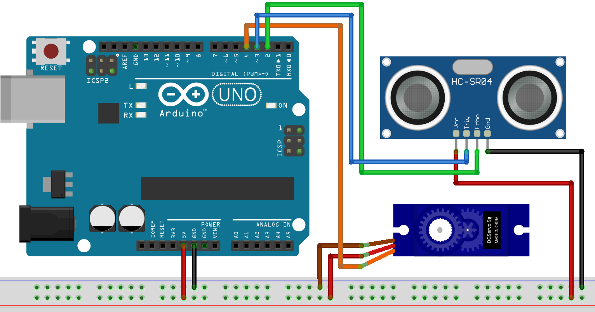

How to make a radar at home!

Know it
Ever seen the radars in the movies? Maybe you want to detect some UFO 🛸? Let's build our own radar at home with our starter kit!The main components we will consider in this project are the ultrasonic sensor and the servo motor.
The ultrasonic sensor works by sending ultrasonic waves from once side and receiving it from the other. By measuring the time for the wave to go back to the sensor, it is possible to calculate the distance of the object facing the sensor.
Servo motors are also very simple. It needs only one wire to control it with a specific kind of signals called pulse width modulation (PWM). But regardless of the way it works internally, we can simply use the library on the Arduino IDE where all what we need is to give it a specific angle to go to.
Wire it
There isn't anything complicated about the connections in this project. Simply, the ultrasonic sensor and the servo motors need to get powered and directly connected to the Arduino. However, you'll probably spend more time mounting the ultrasonic sensor on the servo motor and fixing the motor somehow to something stable... Personally, I took the easy way and taped everything 😅. The components needed are:- Ultrasonic sensor
- Servo motor
- Jumper wires and Breadboard
- Arduino board and USB connector

Connections from Arduino to Breadboard:
- Arduino GND pin → Breadboard ground line
- Arduino 5V pin → Breadboard 5V line
Connections from Arduino to Ultrasonic Sensor:
- Ultrasonic GND pin → Breadboard ground line
- Ultrasonic Vcc pin → Breadboard 5V line
- Ultrasonic Echo pin → Arduino pin 2
- Ultrasonic Trig pin → Arduino pin 3
Connections Arduino to Servo:
- Servo motor brown wire → Breadboard ground line
- Servo motor red wire → Breadboard 5V line
- Servo motor orange wire → Arduino pin 4
Code it
The code in this project consists of two parts, an Arduino sketch and a Processing code. If you don't have Processing already installed, you can download it from here. It will be used to draw the radar interface.Arduino sketch:
/*
Ultrasonic Radar
Tutorial link: https://www.learn.voltaat.com/post/arduino-radar
This is an Arduino sketch controls an ultrasonic sensor with a servo motor to act like a radar. This sketch comes with a corresponding processing code.
Components Needed:
1. Ultrasonic sensor ....x1
2. Servo motor ..........x1
Connections:
Arduino GND pin → Breadboard ground line
Arduino 5V pin → Breadboard 5V line
Ultrasonic GND pin → Breadboard ground line
Ultrasonic Vcc pin → Breadboard 5V line
Ultrasonic Echo pin → Arduino pin 2
Ultrasonic Trig pin → Arduino pin 3
Servo motor brown wire → Breadboard ground line
Servo motor red wire → Breadboard 5V line
Servo motor orange wire → Arduino pin 4
*/
// Includes the Servo library
#include <Servo.h>
#define ECHO_PIN 2 // Ultrasonic echo pin
#define TRIG_PIN 3 // Ultrasonic trig pin
#define SERV_PIN 4 // Servo motor pin
Servo serv; // Create a servo object for controlling the servo motor
// Commands inside void setup run once
void setup() {
Serial.begin(9600); // Start the serial monitor
pinMode(TRIG_PIN, OUTPUT); // Set the TRIG_PIN as an output
pinMode(ECHO_PIN, INPUT); // Set the ECHO_PIN as an input
serv.attach(SERV_PIN); // Set the Servo motor pin
}
// Commands inside void loop run forever
void loop() {
int del = 30; // Set the delay between steps
// Move from angle 0 to 180
for (int i = 0; i < 180; ++i) {
serv.write(i);
Serial.print(i); Serial.print(',');
Serial.println(calculateDistance());
delay(del);
}
// Move from angle 179 to 1
for (int i = 179; i > 0; --i) {
serv.write(i);
Serial.print(i); Serial.print(',');
Serial.println(calculateDistance());
delay(del);
}
}
// Calculate the distance measured by the Ultrasonic sensor
int calculateDistance() {
digitalWrite(TRIG_PIN, LOW);
delayMicroseconds(2);
// Sets the TRIG_PIN on HIGH state for 10 micro seconds
digitalWrite(TRIG_PIN, HIGH);
delayMicroseconds(10);
digitalWrite(TRIG_PIN, LOW);
// Reads the ECHO_PIN, returns the sound wave travel time in microseconds
int duration = pulseIn(ECHO_PIN, HIGH);
return duration * 0.034 / 2;
}
Processing code:
/*
Ultrasonic Radar
Tutorial link: https://www.learn.voltaat.com/post/arduino-radar
This processing code visualizes a radar using the ultrasonic signals read from the Arduino. This code comes with a corresponding Arduino sketch with the connections and components details.
*/
import processing.serial.*; // Imports library for serial communication
// Constants
final int THRESHOLD = 40; // Distance threshold
final String PORT = "auto"; // Serial port (e.g. "COM3", "/dev/ttyACM0")
// Variables
int angle;
int distance;
void setup() {
// Set the window size
size(1920, 1080);
smooth();
String port = PORT.equals("auto") ? Serial.list()[0] : PORT;
// Start the serial communication
Serial myPort = new Serial(this, port, 9600);
// Read the data from the serial port up to the new line character
// so that it reads every line like: "angle,distance"
myPort.bufferUntil('\n');
}
// read the serial buffer and set the values
void serialEvent(Serial port) {
String line = port.readStringUntil('\n');
if (line != null) {
line = trim(line);
String[] arr = line.split(",");
angle = int(arr[0]);
distance = int(arr[1]);
}
}
void draw() {
fill(98, 245, 31);
// Simulating motion blur and slow fade of the moving line
noStroke();
fill(0, 4);
rect(0, 0, width, height - height * 0.065);
fill(98, 245, 31); // green color
// calls the functions for drawing the radar
drawRadar();
drawLine();
drawObject();
drawText();
}
void drawRadar() {
pushMatrix();
// moves the starting coordinats to new location
translate(width / 2, height - height * 0.074);
noFill();
strokeWeight(2);
stroke(98, 245, 31);
// draws the arc lines
arc(0, 0, (width - width * 0.0625), (width - width * 0.0625), PI, TWO_PI);
arc(0, 0, (width - width * 0.27), (width - width * 0.27), PI, TWO_PI);
arc(0, 0, (width - width * 0.479), (width - width * 0.479), PI, TWO_PI);
arc(0, 0, (width - width * 0.687), (width - width * 0.687), PI, TWO_PI);
// draws the angle lines
line(-width / 2, 0, width / 2, 0);
line(0, 0, (-width / 2) * cos(radians(30)), (-width / 2) * sin(radians(30)));
line(0, 0, (-width / 2) * cos(radians(60)), (-width / 2) * sin(radians(60)));
line(0, 0, (-width / 2) * cos(radians(90)), (-width / 2) * sin(radians(90)));
line(0, 0, (-width / 2) * cos(radians(120)), (-width / 2) * sin(radians(120)));
line(0, 0, (-width / 2) * cos(radians(150)), (-width / 2) * sin(radians(150)));
line((-width / 2) * cos(radians(30)), 0, width / 2, 0);
popMatrix();
}
void drawObject() {
pushMatrix();
// moves the starting coordinats to new location
translate(width / 2, height - height * 0.074);
strokeWeight(9);
stroke(255, 10, 10); // red color
// covers the distance from the sensor from cm to pixels
float pixsDistance = distance * ((height - height * 0.1666) * 0.025);
// limiting the range
if(distance < THRESHOLD) {
// draws the object according to the angle and the distance
line(pixsDistance * cos(radians(angle)),
-pixsDistance * sin(radians(angle)),
(width-width * 0.505) * cos(radians(angle)),
-(width-width * 0.505) * sin(radians(angle)));
}
popMatrix();
}
void drawLine() {
pushMatrix();
strokeWeight(9);
stroke(30, 250, 60);
// moves the starting coordinats to new location
translate(width / 2, height - height * 0.074);
// draws the line according to the angle
line(0, 0,
(height - height * 0.12) * cos(radians(angle)),
-(height - height * 0.12) * sin(radians(angle)));
popMatrix();
}
void drawText() { // draws the texts on the screen
pushMatrix();
fill(0, 0, 0);
noStroke();
rect(0, height - height * 0.0648, width, height);
fill(98, 245, 31);
textSize(25);
text("10cm", width - width * 0.3854, height - height * 0.0833);
text("20cm", width - width * 0.281, height - height * 0.0833);
text("30cm", width - width * 0.177, height - height * 0.0833);
text("40cm", width - width * 0.0729, height - height * 0.0833);
textSize(40);
text("Voltaat radar ", width - width * 0.875, height - height * 0.0277);
text("Angle: " + angle + "°", width - width * 0.48, height - height * 0.0277);
if (distance < THRESHOLD) {
text("Distance: " + distance + " cm", width - width * 0.26, height - height * 0.0277);
}
textSize(25);
fill(98, 245, 60);
translate((width - width * 0.4994) + width / 2 * cos(radians(30)),
(height - height * 0.0907) - width / 2 * sin(radians(30)));
rotate(-radians(-60));
text("30°", 0, 0);
resetMatrix();
translate((width - width * 0.503) + width / 2 * cos(radians(60)),
(height - height * 0.0888) - width / 2 * sin(radians(60)));
rotate(-radians(-30));
text("60°", 0, 0);
resetMatrix();
translate((width - width * 0.507) + width / 2 * cos(radians(90)),
(height - height * 0.0833) - width / 2 * sin(radians(90)));
rotate(radians(0));
text("90°", 0, 0);
resetMatrix();
translate(width - width * 0.513 + width / 2 * cos(radians(120)),
(height - height * 0.07129) - width / 2 * sin(radians(120)));
rotate(radians(-30));
text("120°", 0, 0);
resetMatrix();
translate((width - width * 0.5104) + width / 2 * cos(radians(150)),
(height - height * 0.0574) - width / 2 * sin(radians(150)));
rotate(radians(-60));
text("150°", 0, 0);
popMatrix();
}
Note: the code is based on this project with several modifications.